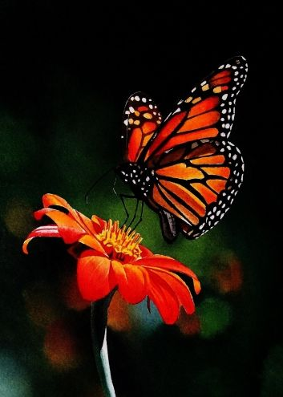

| Peligro de extinción | FOTO |
| Las mariposas monarca occidentales alcanzaron en 2020 un mínimo histórico, colocándolas al borde de la extinción.
A pesar de que el recuento cifró a esta especie en menos de 2000 en California, el gobierno decidió no incluirla como especie en peligro de extinción. A pesar de los esfuerzos de protección, estas cifras suponen una disminución muy importante frente a las 30 000 documentadas el año anterior y las millones que había en vuelo en la década de 1980.Según las Unión Internacional para la Conservación de la Naturaleza (UICN), que estudió la especie en 2021, la mariposa monarca no corre peligro, aunque en su lista roja destaca que su población está en descenso. El organismo internacional señala su preocupación por la poblacion de la especie en su migración más occidental, cuyos números "nunca habían sido tan bajos" Pero en junio de 2022, la propia UICN declaró en peligro de extinción a la mariposa monarca migratoria, la icónica subespecie común en Norteamérica. Pero apenas un año más tarde, en septiembre de 2023, la misma agencia se retractó de su declaración y volvió a situar a la subespecie nortamericana en la categoría de vulnerable a la extinción, un nivel inferior en el sistema de clasificación de riesgos. Este trágico descenso de las poblaciones en los últimos 20 años se debe principalmente a que las asclepias (Asclepias syriaca) están desapareciendo por el uso de herbicidas y la pérdida de hábitat. La asclepia, o «algodoncillo», es la única planta donde las mariposas monarca pueden poner sus huevos y la única planta de la que se alimenta la oruga. |
 |